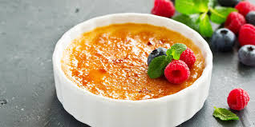

Ingredientes
- 600 ml de crema de leche (nata para montar)
- 1 vaina de vainilla o 1 cucharadita de extracto
- 6 yemas de huevo
- 90 g de azúcar (más extra para caramelizar)
- 1 pizca de sal
Utensilios necesarios
- Batidora o batidor
- Cuchara de madera
- Soplete de cocina
- Ramekins (moldecitos individuales)
- Horno
Información Nutricional (por porción)
Calorías: 420 kcal
Grasas: 36g
Carbohidratos: 22g
Proteínas: 5g
Preparación
Paso 1: Infusionar la crema
Calentar la crema de leche en una cacerola a fuego medio. Si usas vainilla, cortar la vaina por la mitad a lo largo y raspar las semillas. Añadir tanto las semillas como la vaina a la crema. Justo antes de que hierva, retirar del fuego, tapar y dejar infusionar 15-20 minutos.

Paso 2: Preparar las yemas
En un bol, batir las yemas con el azúcar y la pizca de sal hasta que la mezcla blanquee ligeramente y aumente de volumen.
Paso 3: Combinar las mezclas
Retirar la vaina de vainilla de la crema (si se usó). Verter la crema caliente poco a poco sobre las yemas, batiendo constantemente para no cocinar los huevos.
Paso 4: Cocinar al baño María
Precalentar el horno a 150°C. Colocar los ramequins en una bandeja para horno profunda. Verter la mezcla en los ramequins y llenar la bandea con agua caliente hasta la mitad de la altura de los moldes. Hornear durante 35-40 minutos hasta que estén cuajados pero aún temblorosos en el centro.
Paso 5: Enfriar y refrigerar
Retirar los ramequins del baño María y dejar enfriar a temperatura ambiente. Luego, refrigerar al menos 4 horas (preferiblemente toda la noche).
Paso 6: Caramelizar
Antes de servir, espolvorear una capa fina y uniforme de azúcar sobre cada crema. Usar un soplete de cocina para caramelizar el azúcar hasta que quede dorado y crujiente. Servir inmediatamente.
Variaciones
Chocolate
Añadir 50g de chocolate negro fundido a la crema caliente antes de mezclar con las yemas.
Café
Infusionar la crema con 2 cucharadas de café molido en lugar de vainilla.
Cítrica
Añadir la ralladura de 1 limón o naranja a la crema durante la infusión.
Notas y Consejos
- Para saber si está bien cocido, la crema debe estar firme en los bordes pero aún temblorosa en el centro.
- El tiempo de refrigeración es clave para obtener la textura perfecta.
- Puedes preparar las cremas con 1-2 días de anticipación y caramelizar justo antes de servir.
- Para un acabado profesional, usa azúcar superfina o azúcar glas para caramelizar.